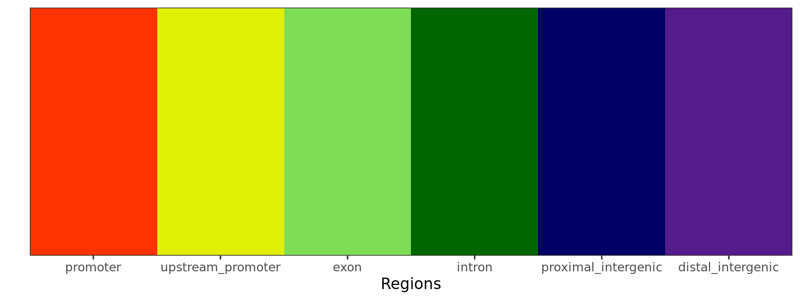

library(tidyverse)
library(magrittr)
library(rtracklayer)
library(glue)
library(pander)
library(scales)
library(yaml)
library(reactable)
library(htmltools)
library(plyranges)
library(GenomicInteractions)
library(extraChIPs)panderOptions("big.mark", ",")
panderOptions("missing", "")
panderOptions("table.split.table", Inf)
theme_set(
theme_bw() +
theme(plot.title = element_text(hjust = 0.5))
)
annotation_path <- here::here("output", "annotations")
all_out <- list(
chrom_sizes = file.path(annotation_path, "chrom.sizes"),
gene_regions = file.path(annotation_path, "gene_regions.rds"),
gtf = file.path(annotation_path, "all_gr.rds"),
seqinfo = file.path(annotation_path, "seqinfo.rds"),
transcript_models = file.path(annotation_path, "trans_models.rds"),
tss = file.path(annotation_path, "tss.rds"),
colours = file.path(annotation_path, "colours.rds")
)source(
here::here("workflow", "scripts", "custom_functions.R")
)config <- read_yaml(here::here("config", "config.yml"))
params <- read_yaml(here::here("config", "params.yml"))
colours <- read_yaml(here::here("config", "colours.yml"))treat_levels <- config$comparisons$contrasts %>%
unlist() %>%
unique()
samples <- here::here(config$samples$file) %>%
read_tsv() %>%
mutate(
treat = factor(treat, levels = unique(c(treat_levels, treat))),
target = as.factor(target)
)
treat_levels <- levels(samples$treat)
has_external <- length(config$external$coverage) > 0
if (has_external) {
treat_levels <- c(
treat_levels,
lapply(config$external$coverage, names) %>% unlist()
) %>%
unique()
}Before analysing any datasets, annotations for the genome and transcriptome were defined.
sq <- read_rds(file.path(annotation_path, "seqinfo.rds"))As the foundation for all annotation objects, the description of the
underlying genome is required as a Seqinfo object. For this
workflow, both the mitochondrial genome and any scaffolds are excluded,
giving only the autosomes and the X/Y chromosomes. This
Seqinfo object is added to all subsequent objects requiring
information about the underlying genome, such as a
GenomicRanges object.
blacklist <- file.path(annotation_path, "blacklist.bed.gz") %>%
import.bed(seqinfo = sq) %>%
sort()blacklist %>%
group_by(name) %>%
summarise(
n = n(),
p = percent(sum(width)/ sum(seqlengths(sq))),
kb = sum(width) / 1e3,
min = min(width) / 1e3,
median = median(width) / 1e3,
max = max(width) / 1e3
) %>%
as_tibble() %>%
dplyr::rename_all(str_to_title) %>%
dplyr::rename(
Type = Name,
`Nbr Regions` = N,
`% Genome` = P,
`Total (kb)` = Kb,
`Min (kb)` = Min,
`Median (kb)` = Median,
`Max (kb)` = Max
) %>%
pander(
caption = glue(
"*Summary of genomic regions excluded in the blacklist. ",
"The default set of blacklisted regions was used, as obtained from ",
"https://github.com/Boyle-Lab/Blacklist (ENCODE)*"
),
justify = "lrrrrrr"
)| Type | Nbr Regions | % Genome | Total (kb) | Min (kb) | Median (kb) | Max (kb) |
|---|---|---|---|---|---|---|
| High Signal Region | 583 | 8.7% | 269,778 | 1.1 | 13.4 | 30,590 |
| Low Mappability | 251 | 0.2% | 5,192 | 1.4 | 5.8 | 361.7 |
blacklist %>%
as_tibble(rangeAsChar = FALSE) %>%
group_by(seqnames) %>%
summarise(blacklisted = sum(width)) %>%
left_join(as_tibble(sq), by = "seqnames") %>%
mutate(
whitelisted = seqlengths - blacklisted,
seqnames = factor(seqnames, levels = seqlevels(sq))
) %>%
pivot_longer(
ends_with("listed"), names_to = "category", values_to = "bp"
) %>%
ggplot(aes(fct_rev(seqnames), bp/1e6, fill = fct_rev(category))) +
geom_col() +
coord_flip() +
scale_y_continuous(expand = expansion(c(0, 0.05))) +
scale_fill_manual(
values = c(rgb(0.1, 0.3, 0.9), rgb(0.9, 0.2, 0.1))
) +
labs(
x = "Chromosome", y = "Length (Mb)", fill = "Status"
)Breakdown of blacklisted regions by chromosome
all_gr <- read_rds(file.path(annotation_path, "all_gr.rds"))gtf, excluding mitochondrial features.Seqinfo was also placed as the
foundation of this annotation object, ensuring this propagates through
all subsequent objectsGviz
requires a specific GRanges structure for gene and
transcript models to be displayed. This object was created at this point
so transcript models could be simply visualised throughout the
workflow.In total this annotation build contained 62,449 genes, 229,655 transcripts and 1,379,777 exons.
gene_regions <- read_rds(file.path(annotation_path, "gene_regions.rds"))
regions <- vapply(gene_regions, function(x) unique(x$region), character(1))
missing_reg_col <- setdiff(names(regions), names(colours$regions))
if (length(missing_reg_col) > 0){
def_reg_cols <- c(
promoters = "#FF3300", upstream = "#E1EE05", exons = "#7EDD57",
introns = "#006600", proximal = "#000066", distal = "#551A8B"
)
colours$regions[missing_reg_col] <- def_reg_cols[missing_reg_col]
}
region_cols <- unlist(colours$regions) %>%
setNames(regions[names(.)])Using the provided GTF, unique gene and transcript-centric features were also defined as:
In addition, TSS regions were defined as a separate object given each TSS has single-base width. With the exception of TSS and Promoters, these features were non-overlapping and defined in a hierarchical, unstranded manner.
config.params.yml. Overlapping regions were merged to
create a single promoter region for all transcripts within that genomic
region.cp <- em(
glue(
"
Summary of gene-centric regions defined as a key annotation set.
Colours used throughout the workflow for each region are indicated in the
first column, with other summary statistics making up the rest of the table.
"
)
)
tbl <- gene_regions %>%
lapply(
function(x){
tibble(
n = length(x),
width = sum(width(x)),
region = unique(x$region)
)
}
) %>%
bind_rows() %>%
mutate(
width = width / 1e6,
mn = 1e3*width/n,
region = fct_inorder(region),
`% Genome` = width / sum(width),
) %>%
rename_all(str_to_title) %>%
mutate(Guide = region_cols[Region]) %>%
dplyr::select(
Guide, Region, N, Width, Mn, `% Genome`
) %>%
reactable(
searchable = FALSE, filterable = FALSE,
columns = list(
Guide = colDef(
maxWidth = 50,
style = function(value) list(background = value),
cell = function(value) "",
name = ""
),
Region = colDef(minWidth = 200),
N = colDef(
maxWidth = 150,
cell = function(value) comma(value, 1)
),
Width = colDef(
name = "Total Width (Mb)",
cell = function(value) sprintf("%.1f", value)
),
Mn = colDef(
name = "Average Width (kb)",
cell = function(value) sprintf("%.2f", value)
),
"% Genome" = colDef(
cell = function(value) percent(value, 0.1)
)
)
)
div(class = "table",
div(class = "table-header",
div(class = "caption", cp),
tbl
)
)gene_regions %>%
lapply(select, region) %>%
GRangesList() %>%
unlist() %>%
mutate(region = factor(region, levels = regions)) %>%
plotPie(
fill = "region", scale_by = "width", show_total = FALSE,
category_size = 3.5
) +
scale_fill_manual(values = region_cols) +
theme(legend.position = "none")Summary of gene-centric regions using the above workflow and the supplied GTF. Percentages represent the amount of the genome allocated to each region. Blacklisted regions were not considered for this step of the annotation.
id <- sort(all_gr$gene$gene_id)[[1]]gr <- subset(all_gr$gene, gene_id == id) %>%
resize(width = width(.) + 2.4e4, fix = 'center') %>%
unstrand()
ft <- gene_regions %>%
lapply(subsetByOverlaps, gr) %>%
lapply(select, region) %>%
lapply(intersectMC, gr) %>%
GRangesList() %>%
unlist() %>%
setNames(c()) %>%
subset(region != "TSS") %>%
sort()
df <- list(
all_gr$transcript %>%
subsetByOverlaps(gr) %>%
as_tibble(rangeAsChar = FALSE),
all_gr$exon %>%
subsetByOverlaps(gr) %>%
as_tibble(rangeAsChar = FALSE)
) %>%
bind_rows() %>%
mutate(
transcript_name = as.factor(transcript_name)
)
df %>%
ggplot(aes(x = start, y = as.integer(transcript_name))) +
geom_rect(
aes(
xmin = start, xmax = end,
ymin = 0, ymax = Inf,
fill = region
),
data = ft %>%
as.data.frame() %>%
mutate(region = fct_inorder(region) ),
inherit.aes = FALSE,
alpha = 0.6
) +
geom_segment(
aes(
x = start, xend = end,
y = as.integer(transcript_name),
yend = as.integer(transcript_name)
),
data = . %>%
dplyr::filter(type == "transcript")
) +
geom_segment(
aes(
x = mid, xend = mid_offset,
y = as.integer(transcript_name),
yend = as.integer(transcript_name)
),
data = all_gr$transcript %>%
subsetByOverlaps(gr) %>%
select(transcript_name) %>%
setdiffMC(all_gr$exon) %>%
as.data.frame() %>%
mutate(transcript_name = vctrs::vec_proxy(transcript_name)) %>%
unnest(transcript_name) %>%
dplyr::filter(width > 600) %>%
mutate(
mid = end - 0.5*width,
mid_offset = ifelse(strand == "+", mid + 50, mid - 50),
transcript_name = factor(transcript_name, levels = levels(df$transcript_name))
),
arrow = arrow(angle = 40, length = unit(0.015, "npc"))
) +
geom_rect(
aes(
xmin = start, xmax = end,
ymin = as.integer(transcript_name) - 0.2,
ymax = as.integer(transcript_name) + 0.2
),
data = . %>%
dplyr::filter(type == "exon"),
fill = "blue", colour = "blue"
) +
coord_cartesian(xlim = c(start(gr), end(gr))) +
scale_x_continuous(
labels = comma, expand = expansion(c(0, 0))
) +
scale_y_continuous(
breaks = seq_along(levels(df$transcript_name)),
labels = levels(df$transcript_name),
expand = expansion(c(-0.05, 0.05))
) +
scale_fill_manual(values = region_cols) +
labs(
x = as.character(seqnames(gr)), y = "Transcript", fill = "Feature"
) +
theme(
panel.grid = element_blank()
)12kb region surrounding TSPAN6 showing all annotated regions.
feat_path <- here::here(config$external$features)
external_features <- list(features = c())
has_features <- FALSE
if (length(feat_path)> 0) {
stopifnot(file.exists(feat_path))
external_features <- suppressWarnings(
import.gff(feat_path, genome = sq)
)
mcols(external_features) <- cbind(
mcols(external_features),
gene_regions %>%
lapply(function(x) propOverlap(external_features, x)) %>%
as("DataFrame")
)
keep_cols <- !vapply(
mcols(external_features), function(x) all(is.na(x)), logical(1)
)
mcols(external_features) <- mcols(external_features)[keep_cols]
has_features <- TRUE
}feat_col <- colours$features
feat_levels <- unique(external_features$feature)
missing_feat_col <- setdiff(feat_levels, names(feat_col))
if (length(missing_feat_col) > 0) {
if (!"no_feature" %in% feat_levels)
missing_feat_col <- c(missing_feat_col, "no_feature")
n <- length(missing_feat_col)
feat_col[missing_feat_col] <- hcl.colors(max(9, n), "Spectral")[seq_len(n)]
}
colours$features <- feat_colExternal features were compared to the gene-centric annotations.
suppressWarnings(
external_features %>%
mutate(w = width) %>%
mcols() %>%
as_tibble() %>%
pivot_longer(
cols = all_of(names(regions)),
names_to = "region", values_to = "prop"
) %>%
group_by(feature, region) %>%
summarise(ol = sum(prop*w/1e6), .groups = "drop") %>%
left_join(
external_features %>%
group_by(feature) %>%
summarise(w = sum(width/1e6)) %>%
as_tibble(),
by = "feature"
) %>%
mutate(
p = ol / w,
Feature = factor(feature, levels = names(feat_col)) %>%
fct_relabel(str_sep_to_title),
region = factor(regions[region], levels = regions)
) %>%
ggplot(
aes(fct_rev(region), p, fill = feature)
) +
geom_col(colour = "grey80") +
geom_label(
aes(label = percent(p, accuracy = 1)),
data = . %>%
group_by(region, feature, Feature) %>%
summarise(p = sum(p), .groups = "drop"),
alpha = 0.5,
nudge_y = 0.03
) +
coord_flip() +
facet_grid(Feature~., scales = "free_y", space = "free") +
scale_y_continuous(labels = percent, expand = expansion(c(0, 0.05))) +
scale_fill_manual(values = feat_col) +
labs(x = "", y = "") +
theme(legend.position = "none")
)The proportion of the ranges provided as external features in the file enhancer_atlas_2.0_zr75.gtf.gz, and which overlap the gene-centric regions defined above.
cp <- em(
glue(
"Summary of external features provided in the file ",
"{basename(config$external$feature)}. All peaks and windows will be ",
"compared to these throughout the workflow. The colours defined for each ",
"feature is show as a guide on the left."
)
)
tbl <- external_features %>%
group_by(feature) %>%
summarise(
N = n(),
Width = sum(width/1e3),
med = median(width/1e3),
range = glue("[{round(min(width/1e3), 1)}, {round(max(width/1e3), 1)}]")
) %>%
as_tibble() %>%
mutate(
guide = unlist(feat_col)[feature],
feature = factor(feature, levels = names(feat_col)) %>%
fct_relabel(str_sep_to_title)
) %>%
arrange(feature) %>%
dplyr::select(guide, everything()) %>%
reactable(
filterable = FALSE, searchable = FALSE,
columns = list(
guide = colDef(
maxWidth = 40,
style = function(value) list(background= value),
cell = function(value) "",
name = ""
),
feature = colDef(
name = "Feature",
footer = htmltools::tags$b("Total")
),
N = colDef(
cell = function(value) comma(value, 1),
footer = htmltools::tags$b(comma(sum(.$N)))
),
Width = colDef(
name = "Total Width (kb)",
cell = function(value) comma(value, 1),
footer = htmltools::tags$b(comma(sum(.$Width), 1))
),
med = colDef(
name = "Median Width (kb)",
cell = function(value) sprintf("%.2f", value)
),
range = colDef(name = "Size Range (kb)", align = "right")
)
)
div(class = "table",
div(class = "table-header",
div(class = "caption", cp),
tbl
)
)No HiC Data was supplied as an input.
## qc_colours need to have `Pass` and `Fail`
missing_qc_cols <- setdiff(c("pass", "fail"), names(colours$qc))
if ("pass" %in% missing_qc_cols) colours$qc$pass <- "#0571B0" # Blue
if ("fail" %in% missing_qc_cols) colours$qc$fail <- "#CA0020" # Red
colours$qc <- colours$qc[c("pass", "fail")]
## The colours specified as treat_colours should contain all treat_levels + Input
## If Input is missing, set to #33333380 ('grey20' + alpha = 50)
## This should be a standard chunk for all workflows
missing_treat_cols <- setdiff(
c("Input", treat_levels), names(colours$treat)
)
if (length(missing_treat_cols) > 0) {
if ("Input" %in% missing_treat_cols)
colours$treat$Input <- "#33333380"
## Automatically sample from the viridis palette if no colour is assigned
colours$treat[setdiff(missing_treat_cols, "Input")] <- hcl.colors(
length(setdiff(missing_treat_cols, "Input"))
)
}
## Direction colours always need up, down, unchanged & undetected
missing_dir_cols <- setdiff(
c("up", "down", "unchanged", "undetected", "ambiguous"),
names(colours$direction)
)
if (length(missing_dir_cols) > 0){
def_dir_cols <- c(
up = "#CA0020", down = "#0571B0",
unchanged = "#7F7F7F", undetected = "#E5E5E5",
ambiguous = "#000000"
)
colours$direction[missing_dir_cols] <- def_dir_cols[missing_dir_cols]
}
## Heatmap gradients
if (length(colours$heatmaps) < 2) {
colours$heatmaps <- unique(c(colours$heatmaps, c("white", "red")))
}
write_rds(colours, all_out$colours, compress = "gz")Colours were checked where provided and any missing colours were
automatically assigned. These colour schemes are shown below and will be
propagated through all steps of the workflow. To change any colours,
simply add them to config/rmarkdown.yml.
.plotScheme(colours$qc , xlab = "QC Category") .plotScheme(colours$treat, xlab = "Treatment").plotScheme(colours$regions, xlab = "Regions")
.plotScheme(feat_col, xlab = "Feature").plotScheme(colours$direction, xlab = "Direction")colorRampPalette(colours$heatmaps)(11) %>%
setNames(percent(seq(0, 1, length.out = 11))) %>%
as.list() %>%
.plotScheme(xlab = "% Of Signal")During the setup of all required annotations, the following files were exported:
R version 4.2.2 (2022-10-31)
Platform: x86_64-conda-linux-gnu (64-bit)
locale: LC_CTYPE=en_AU.UTF-8, LC_NUMERIC=C, LC_TIME=en_AU.UTF-8, LC_COLLATE=en_AU.UTF-8, LC_MONETARY=en_AU.UTF-8, LC_MESSAGES=en_AU.UTF-8, LC_PAPER=en_AU.UTF-8, LC_NAME=C, LC_ADDRESS=C, LC_TELEPHONE=C, LC_MEASUREMENT=en_AU.UTF-8 and LC_IDENTIFICATION=C
attached base packages: stats4, stats, graphics, grDevices, utils, datasets, methods and base
other attached packages: extraChIPs(v.1.2.4), BiocParallel(v.1.32.5), GenomicInteractions(v.1.32.0), InteractionSet(v.1.26.0), SummarizedExperiment(v.1.28.0), Biobase(v.2.58.0), MatrixGenerics(v.1.10.0), matrixStats(v.1.0.0), plyranges(v.1.18.0), htmltools(v.0.5.5), reactable(v.0.4.4), yaml(v.2.3.7), scales(v.1.2.1), pander(v.0.6.5), glue(v.1.6.2), rtracklayer(v.1.58.0), GenomicRanges(v.1.50.0), GenomeInfoDb(v.1.34.9), IRanges(v.2.32.0), S4Vectors(v.0.36.0), BiocGenerics(v.0.44.0), magrittr(v.2.0.3), lubridate(v.1.9.2), forcats(v.1.0.0), stringr(v.1.5.0), dplyr(v.1.1.2), purrr(v.1.0.1), readr(v.2.1.4), tidyr(v.1.3.0), tibble(v.3.2.1), ggplot2(v.3.4.2) and tidyverse(v.2.0.0)
loaded via a namespace (and not attached): utf8(v.1.2.3), tidyselect(v.1.2.0), RSQLite(v.2.3.1), AnnotationDbi(v.1.60.0), htmlwidgets(v.1.6.2), grid(v.4.2.2), munsell(v.0.5.0), codetools(v.0.2-19), interp(v.1.1-4), withr(v.2.5.0), colorspace(v.2.1-0), filelock(v.1.0.2), highr(v.0.10), knitr(v.1.43), rstudioapi(v.0.14), ggside(v.0.2.2), labeling(v.0.4.2), GenomeInfoDbData(v.1.2.9), polyclip(v.1.10-4), bit64(v.4.0.5), farver(v.2.1.1), rprojroot(v.2.0.3), vctrs(v.0.6.3), generics(v.0.1.3), lambda.r(v.1.2.4), xfun(v.0.39), biovizBase(v.1.46.0), timechange(v.0.2.0), csaw(v.1.32.0), BiocFileCache(v.2.6.0), R6(v.2.5.1), doParallel(v.1.0.17), clue(v.0.3-64), locfit(v.1.5-9.8), AnnotationFilter(v.1.22.0), bitops(v.1.0-7), cachem(v.1.0.8), DelayedArray(v.0.24.0), BiocIO(v.1.8.0), vroom(v.1.6.3), nnet(v.7.3-19), gtable(v.0.3.3), ensembldb(v.2.22.0), rlang(v.1.1.1), GlobalOptions(v.0.1.2), lazyeval(v.0.2.2), dichromat(v.2.0-0.1), broom(v.1.0.5), checkmate(v.2.2.0), GenomicFeatures(v.1.50.2), crosstalk(v.1.2.0), backports(v.1.4.1), Hmisc(v.5.1-0), EnrichedHeatmap(v.1.27.2), tools(v.4.2.2), ellipsis(v.0.3.2), jquerylib(v.0.1.4), RColorBrewer(v.1.1-3), Rcpp(v.1.0.10), base64enc(v.0.1-3), progress(v.1.2.2), zlibbioc(v.1.44.0), RCurl(v.1.98-1.12), prettyunits(v.1.1.1), rpart(v.4.1.19), deldir(v.1.0-9), GetoptLong(v.1.0.5), reactR(v.0.4.4), ggrepel(v.0.9.3), cluster(v.2.1.4), here(v.1.0.1), ComplexUpset(v.1.3.3), data.table(v.1.14.8), futile.options(v.1.0.1), circlize(v.0.4.15), ProtGenerics(v.1.30.0), hms(v.1.1.3), patchwork(v.1.1.2), evaluate(v.0.21), XML(v.3.99-0.14), VennDiagram(v.1.7.3), jpeg(v.0.1-10), gridExtra(v.2.3), shape(v.1.4.6), compiler(v.4.2.2), biomaRt(v.2.54.0), crayon(v.1.5.2), tzdb(v.0.4.0), Formula(v.1.2-5), DBI(v.1.1.3), tweenr(v.2.0.2), formatR(v.1.14), dbplyr(v.2.3.2), ComplexHeatmap(v.2.14.0), MASS(v.7.3-60), rappdirs(v.0.3.3), Matrix(v.1.5-4.1), cli(v.3.6.1), parallel(v.4.2.2), Gviz(v.1.42.0), metapod(v.1.6.0), igraph(v.1.4.2), pkgconfig(v.2.0.3), GenomicAlignments(v.1.34.0), foreign(v.0.8-84), xml2(v.1.3.3), foreach(v.1.5.2), bslib(v.0.5.0), XVector(v.0.38.0), VariantAnnotation(v.1.44.0), digest(v.0.6.31), Biostrings(v.2.66.0), rmarkdown(v.2.22), htmlTable(v.2.4.1), edgeR(v.3.40.0), restfulr(v.0.0.15), curl(v.5.0.1), Rsamtools(v.2.14.0), rjson(v.0.2.21), lifecycle(v.1.0.3), jsonlite(v.1.8.5), futile.logger(v.1.4.3), limma(v.3.54.0), BSgenome(v.1.66.3), fansi(v.1.0.4), pillar(v.1.9.0), lattice(v.0.21-8), KEGGREST(v.1.38.0), fastmap(v.1.1.1), httr(v.1.4.6), png(v.0.1-8), iterators(v.1.0.14), bit(v.4.0.5), ggforce(v.0.4.1), stringi(v.1.7.12), sass(v.0.4.6), blob(v.1.2.4), latticeExtra(v.0.6-30) and memoise(v.2.0.1)